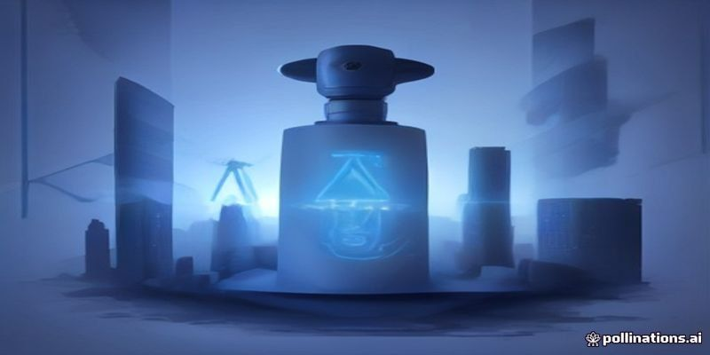

The business landscape in 2026 looks radically different than it did just a few years ago. Generative AI has evolved from novel copywriting tools into complex, autonomous agentic systems capable of handling end-to-end enterprise operations. Yet, despite these rapid technological leaps, millions of small-to-medium businesses (SMBs) and corporate brands are overwhelmed. They know they need artificial intelligence to survive, but they lack the internal expertise to build, deploy, and maintain custom workflows.
This massive technical gap has created the single biggest entrepreneurship opportunity of the decade: The AI Automation Agency (AAA).
If you want to start a high-margin, scalable business this year, building an AAA is your clearest path to success. In this comprehensive step-by-step guide, you will learn exactly how to launch, structure, and scale a profitable AI Automation Agency in 2026.
An AI Automation Agency is a B2B service company that helps businesses optimize operations, reduce labor costs, and increase revenue by building custom AI workflows, autonomous agents, and automated data pipelines.
Unlike traditional digital marketing agencies that sell ad management or SEO, an AAA sells operational leverage and efficiency.
The biggest mistake new agency owners make is trying to serve everyone. "We do AI for businesses" is a weak value proposition that gets ignored in cold outreach.
Instead, position yourself as the specialized expert for a specific industry. When you speak directly to an industry's unique pain points, you can charge premium prices.
Pro Tip: Look for industries with high customer lifetime value (LTV) and heavy administrative bottlenecks. If saving 20 hours a week allows a lawyer or real estate agent to close one extra client a month, your service pays for itself instantly.
You do not need a Ph.D. in computer science or a background in software engineering to build an AI agency today. Thanks to advanced visual workflow builders and agent frameworks, you can create enterprise-grade solutions using modern no-code/low-code tools.
To streamline your agency's build processes and get access to top-tier integration templates, leverage the comprehensive suite at the leading AI Automation Platform, which simplifies complex API calls into intuitive Drag-and-Drop visual pipelines.
Pricing yourself hourly is a fast track to burnout. In 2026, client pricing is strictly value-based or retainer-based. You are selling time saved, increased sales revenue, and decreased payroll costs.
Monthly Maintenance Retainer ($1,000 – $3,000/month): Covers API token costs, hosting, agent fine-tuning, system updates, and ongoing support.
Performance-Based Pricing:
By utilizing proven growth infrastructure like this essential AAA scaling toolkit, you can lower your deliverable creation times, allowing you to handle 5–10 active agency clients on retainer without needing a large internal staff.
In the early stages of your agency, direct outbound reach is your fastest route to revenue. Avoid generic cold emails; focus instead on audit-based outreach.
To supercharge your sales pipeline and automate your own client-acquisition outreach, ensure you check out our top-rated sales automation resources to automate your cold email campaigns and prospect research smoothly.
Once you land your first 3 to 5 retainer clients, your main operational hurdle will pivot from sales to fulfillment and maintainability.
The window of opportunity to build a market-leading AI agency is wide open, but it will not stay this clear forever. As AI infrastructure becomes ubiquitous, businesses that fail to adapt will fall behind, while the agencies providing these implementations will capture massive market share.
You don't need a massive team, millions in venture funding, or years of coding experience. What you need is an understanding of business bottlenecks, the right low-code tech stack, and a clear outreach system.
Take the leap today, harness the power of next-generation AI platforms, and build a modern, high-margin AI Automation Agency poised to lead in 2026 and beyond!